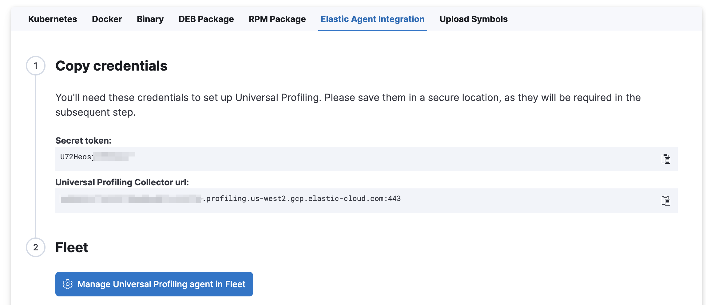
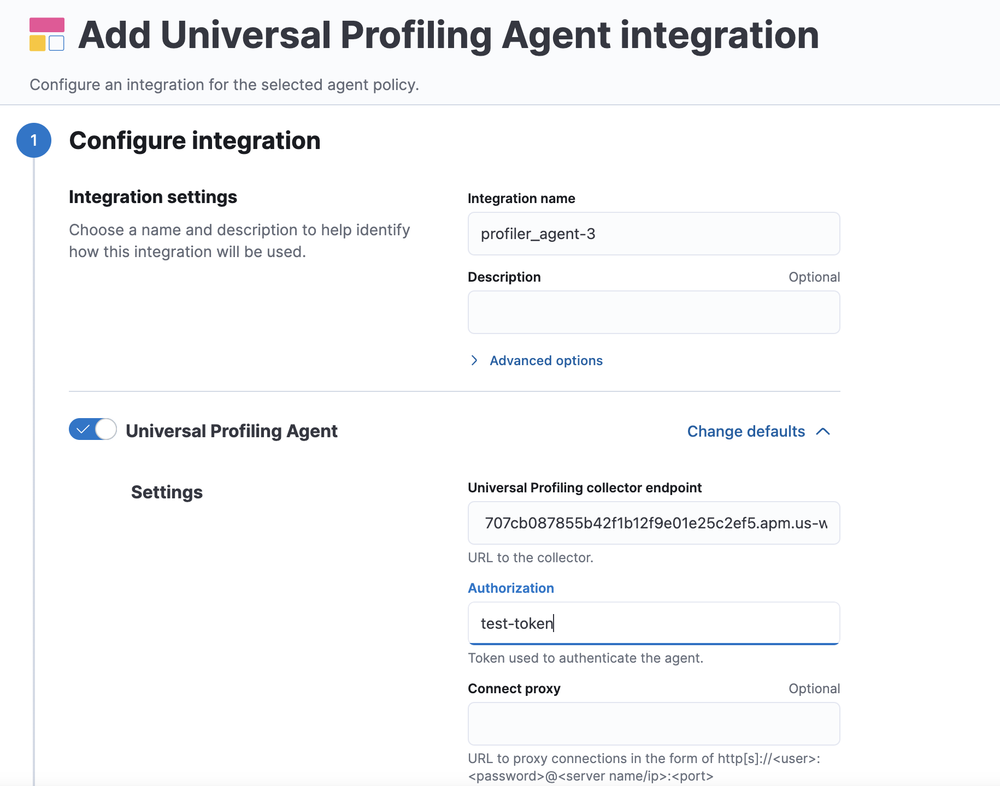

Get started with Universal Profiling
editOn this page, you’ll learn how to configure and use Universal Profiling. This page covers:
- Prerequisites to setting up Universal Profiling
- Setting up Universal Profiling in your Elastic Cloud deployment
- Installing the Universal Profiling Agent
- Installing the Universal Profiling Agent integration
We would appreciate feedback on your experience with this product and any other profiling pain points you may have. See the send feedback section of the troubleshooting documentation for more information.
Prerequisites
editBefore setting up Universal Profiling, make sure you meet the following requirements:
- An Elastic Stack deployment on Elastic Cloud at version 8.7.0 or higher. Universal Profiling is currently only available on Elastic Cloud.
- The workloads you’re profiling must be running on Linux machines with x86_64 or ARM64 CPUs.
- The minimum supported kernel version is either 4.19 for x86_64 or 5.5 for ARM64 machines.
- The Integrations Server must be enabled on your Elastic Cloud deployment.
-
Credentials (username and password) for the
superuserElasticsearch role (typically, theelasticuser).
Interpreters
editUniversal Profiling is a system-wide profiling solution with additional support for PHP, Python, Java (or any JVM language), Go, Rust, C/C++, Node.js/V8, Ruby, .Net, and Perl.
The minimum supported versions of each interpreter are:
- JVM/JDK: 7
- Python: 3.6
- V8: 8.1.0
- Perl: 5.28
- PHP: 7.3
- Ruby: 2.5
- .Net: 6
Deployment configuration example
editThe following deployment configuration example was tested to support profiling data from a fleet of up to 500 hosts, each with 8 or 16 CPU cores, for a total of roughly 6000 cores:
Component |
Size per zone (memory) |
Zones |
Elasticsearch |
64 GB |
2 |
Kibana |
8 GB |
1 |
Integrations Server |
8 GB |
1 |
Even if you’re profiling a smaller fleet, we recommend configuring at least two zones for Elasticsearch and 4 GB of memory each for the Integrations Server and Kibana.
Set up Universal Profiling on an Elastic Cloud deployment
editTo set up Universal Profiling on your Elastic Cloud deployment, you need to configure data ingestion first.
Configure data ingestion
editAfter enabling Universal Profiling on your deployment for the first time, select any subheading under Universal Profiling in the navigation menu to open the following page:
Click Set up Universal Profiling to configure data ingestion.
To configure data ingestion, you need elevated privileges, typically the elastic user.
If you’re upgrading from a previous version with Universal Profiling enabled, see the upgrade guide.
Known issue when configuring data ingestion
editIf your Elastic Cloud deployment originated from version 7.x or earlier and is currently running a version between 8.9.0 and 8.10.2, you may encounter a problem while trying to enable Universal Profiling.
Specifically, clicking the Set up Universal Profiling button triggers an error message that reads Error while setting up Universal Profiling.
Upgrade to version 8.10.3 or more recent to fix this issue.
If you previously enabled Universal Profiling in Elastic Cloud version 8.9.0, and you’re re-executing the setup, you may also encounter this error. If upgrading to 8.10.3 does not solve the issue, complete the following step.
Open Dev Tools from the navigation menu and execute the following command:
When running the following command, customizations of APM and Fleet configurations will be erased.
POST kbn:/internal/fleet/reset_preconfigured_agent_policies/policy-elastic-agent-on-cloud
Install the Universal Profiling Agent
editYou have the following options when installing the Universal Profiling Agent:
Install the Universal Profiling Agent using the Elastic Agent
editTo install the Universal Profiling Agent using the Elastic Agent and the Universal Profiling Agent integration, complete the following steps:
-
Copy the
secret tokenandUniversal Profiling Collector urlfrom the Elastic Agent Integration -
Click
Manage Universal Profiling Agent in Fleetto complete the integration. - On the Integrations page, click Add Universal Profiling Agent.
-
In Universal Profiling Agent → Settings, add the information you copied from the Add profiling data page:
- Add the Universal Profiling collector URL to the Universal Profiling collector endpoint field.
-
Add the secret token to the Authorization field.

- Click Save and continue.
Install the Universal Profiling Agent in standalone mode
editThe Universal Profiling Agent profiles your fleet. You need to install and configure it on every machine that you want to profile.
The Universal Profiling Agent needs root / CAP_SYS_ADMIN privileges to run.
After clicking Set up Universal Profiling in the previous step, you’ll see the instructions for installing the Universal Profiling Agent. You can also find these instructions by clicking the Add data button in the top-right corner of the page.
The following is an example of the provided instructions for Kubernetes:
Universal Profiling Agent configuration notes
editConsider the following when configuring your Universal Profiling Agent:
- The instructions in Kibana work well for testing environments. For production environments, we recommend setting an immutable version.
- Before Elastic Stack version 8.9 the Universal Profiling Agent versioning scheme was not aligned with the Elastic Stack version scheme.
-
The OS packages downloaded from
releases.prodfiler.comhave a version in their file name. - You can find a list of container image versions in the Elastic container library repository.
-
For Kubernetes deployments, the Helm chart version is already used to configure the same container image, unless
overwritten with the
versionparameter in the Helm values file. -
For Elastic Stack version 8.8 or higher, use
v3host agents. For version 8.7, usev2.v3host agents are incompatible with 8.7 Elastic Stack versions.